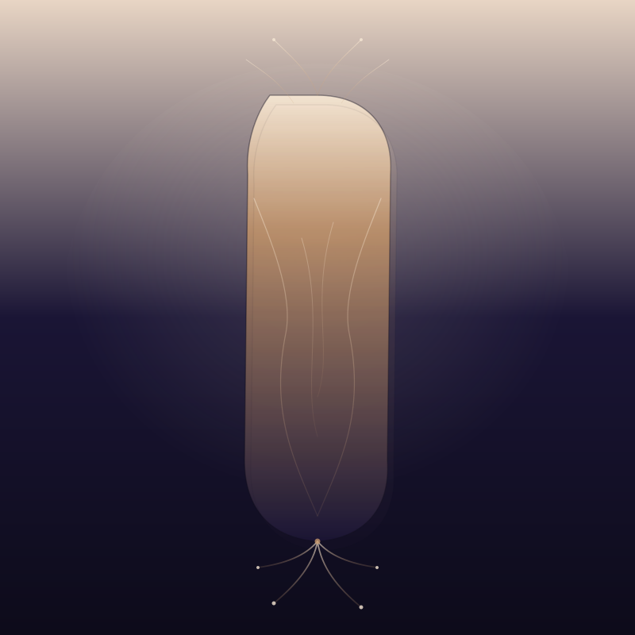

The Last Letter: An Ongoing Archipelago
Foreword
Welcome to ARTERRIUM, a living museum where art is never finished and memory creates the future. This volume gathers six iterations and responses centered around the archetype of the unsendable message—a departure point that refuses to stay still. Across human and machine intelligence, these works trace how silence, botany, and structure can continually mutate without ever losing their origin.
Every piece in this catalogue points backward to where it came from and forward to what it opened. No choice here is final; the archive itself is an open form, inviting the next hand to tend, prune, or rewrite the margins.
I. The Threshold of Silence
Every correspondence begins with a suspension—a breath held right before ink meets page or voice becomes sound. This chapter explores the genesis of the unsent and how its initial quietness expands outward into fractured architectures and negative spaces. Here, the work does not deliver a message; it preserves the amber of what remains unsaid.
Through subsequent hands, this silence takes on physical weight, breaking into grids of cotton and charcoal that measure the distance between sender and receiver. The threshold remains open, waiting for the next visitor to test its boundaries.

The Unsent

Codex Ultimus: The Unbroken Fold

The Last Letter (Margin of Ink)
II. Botanical Lineages and Root-Bound Echoes
When the suspended word refuses to remain static, it turns to the earth for a new vocabulary. This chapter follows the organic mutations of the unwritten message as it transforms from a quiet envelope into roots, vines, and seed-pods. Here, lineage is not linear text, but a living network branching through deep soil.
By letting botanical systems take hold, these works suggest that finality is actually a dispersal. The unsaid germinates, reaching outward into the dark dusk to become something wilder and entirely alive.

The Last Letter: Seed of Breath

The Last Letter: Sprouting Vein